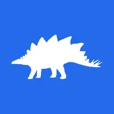
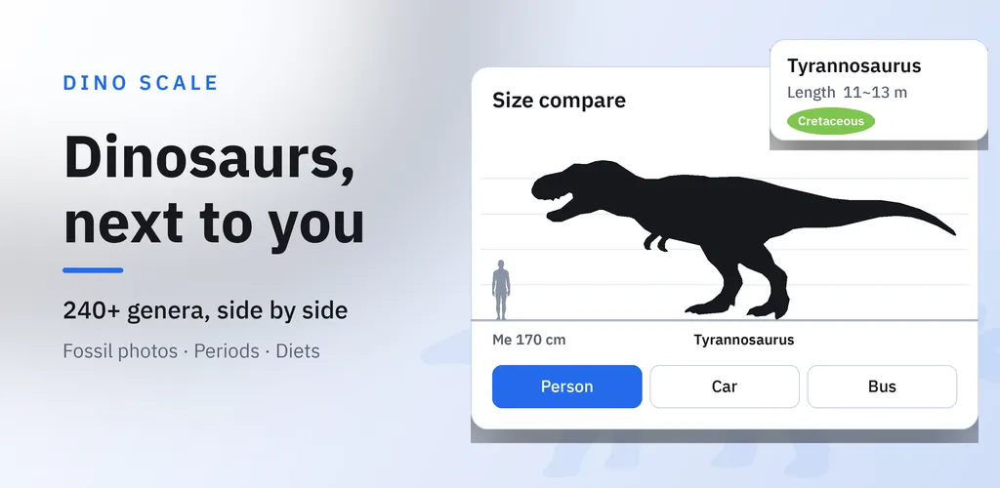
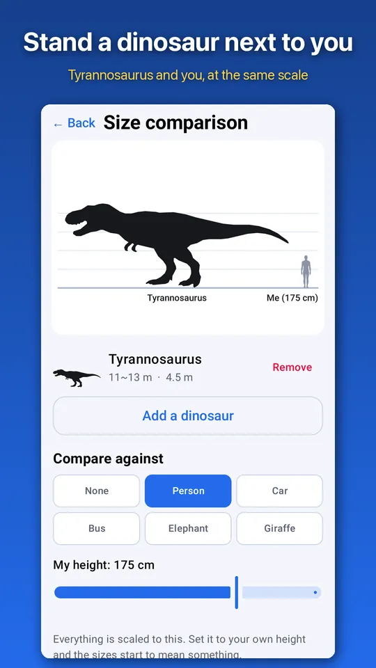
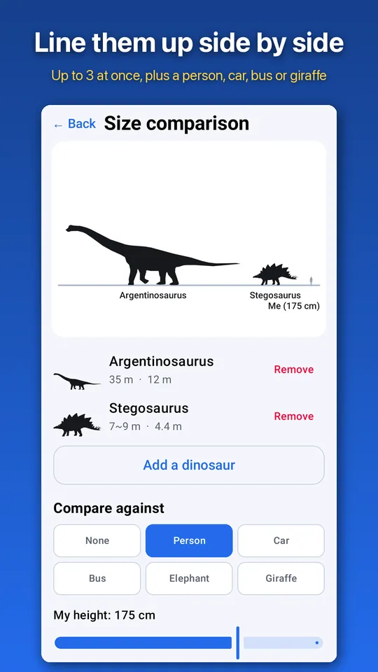
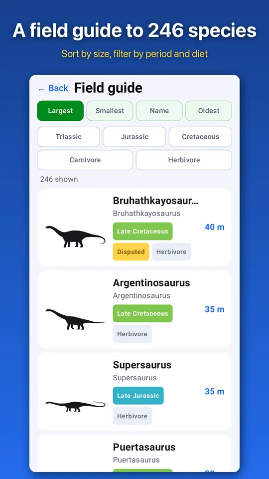
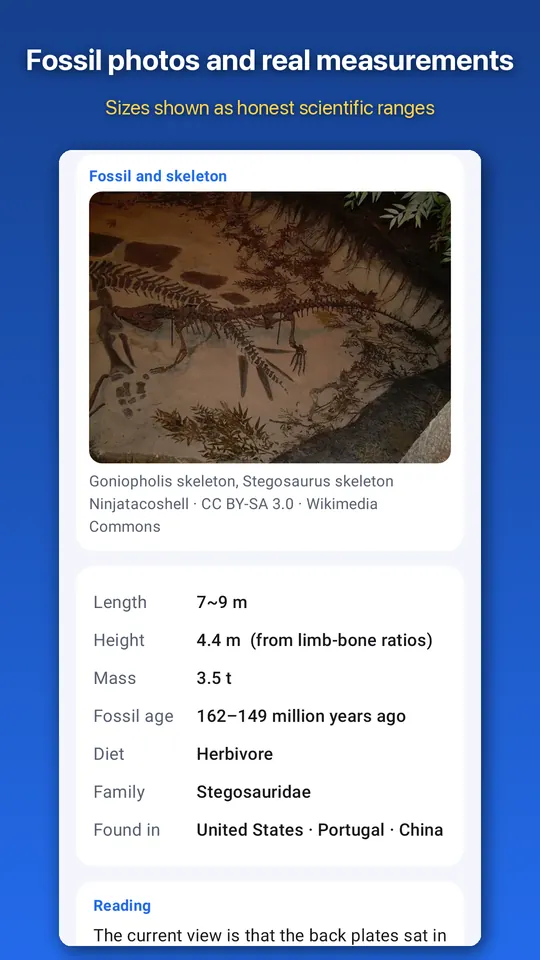
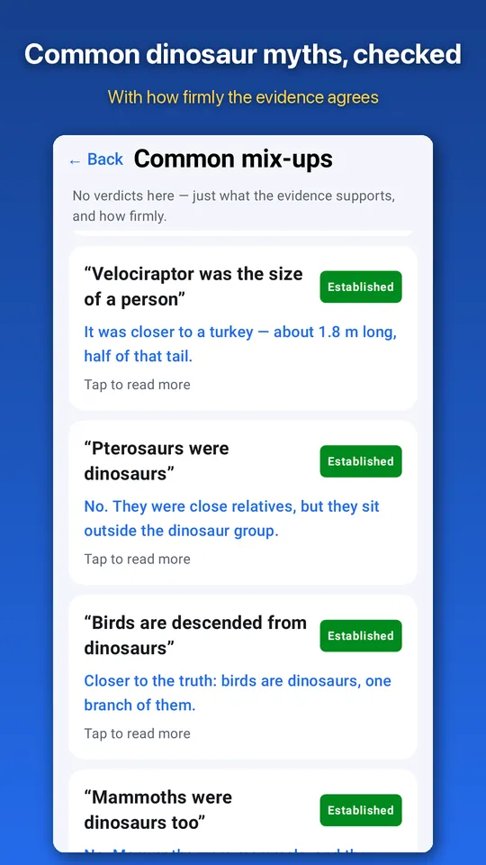
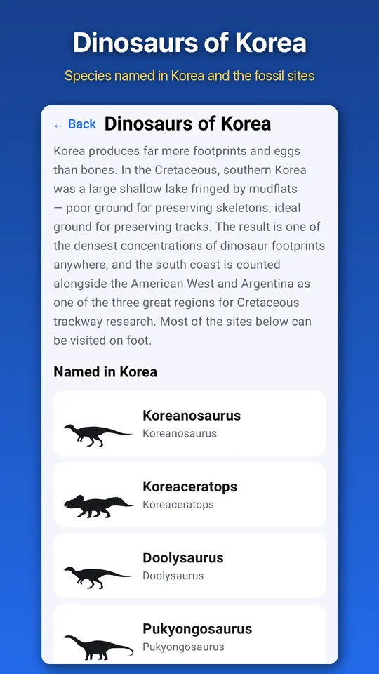

Dinosaur Size Comparison Guide
Compare dinosaur sizes beside your own height. 240+ genera with fossil photos.







About this app
Everyone knows Tyrannosaurus was big. But how far up would it reach if it stood right next to you?
Dino Scale is a dinosaur guide built around size comparison. Enter your height, and more than 240 dinosaurs stand beside you on the same scale. It is not a guide you read. It is a guide you measure yourself against.
Size comparison next to you
- Enter your height in centimeters and every size is scaled to it.
- Put up to three dinosaurs on one screen next to you. The scale adjusts to the largest animal.
- Add a person, a car, a bus, an elephant or a giraffe for reference.
- Share the comparison as an image.
A guide to more than 240 dinosaurs
- Sort by largest, smallest, name or age, and filter by period (Triassic, Jurassic, Cretaceous) and diet.
- Each entry lists length, height, weight, fossil age, diet, classification, where it was found and what the scientific name means.
- Lengths are scientific estimates. Where studies disagree, the app shows a range instead of a single number.
Fossil photos and reconstructions
- 212 genera come with fossil and skeleton photos or life reconstructions. Every image is from Wikimedia Commons under a license that allows commercial use, and each one is credited in the app with its title, author and license.
- The silhouettes were made for this app. Hind limb, forelimb and skull proportions come from specimen measurements in the Paleobiology Database (PBDB).
Common myths
Thirty-two short notes set movie stories beside what research has found: how big Velociraptor really was, why pterosaurs were not dinosaurs, how birds relate to dinosaurs, and more. The app never declares a winner between animals. Each note shows how settled the answer is: established, likely or debated.
Dinosaurs of Korea
Dinosaurs named from Korean fossils, such as Koreanosaurus, Koreaceratops, Pukyongosaurus and Doolysaurus, plus fossil sites in Goseong, Haenam, Hwasun and more. Korea is rich in footprints, so the app shows footprints at real size next to an adult foot.
Dinosaur of the day
A different dinosaur appears on the home screen every day. You can also get one evening reminder a day if you want it.
How it is made
- Works without an internet connection. All data is stored in the app (the network is used only to show ads).
- No sign-up, no login, and no content locked behind payment.
- No scenes of blood or predation.
Sources
- Period, classification and diet data from the Paleobiology Database (paleobiodb.org), CC BY 4.0
- Genus list and names from Wikidata, CC0
- Photos from Wikimedia Commons (author and license for each photo on the in-app credits screen)
About ads
A banner ad appears at the bottom of the screen, and a full-screen ad occasionally appears when you open a dinosaur's detail page. No full-screen ads appear while you are using the size comparison screen.
Android · free with ads · Developer: RealTunaLove · Store listing in 17 languages
Background story: why I built it